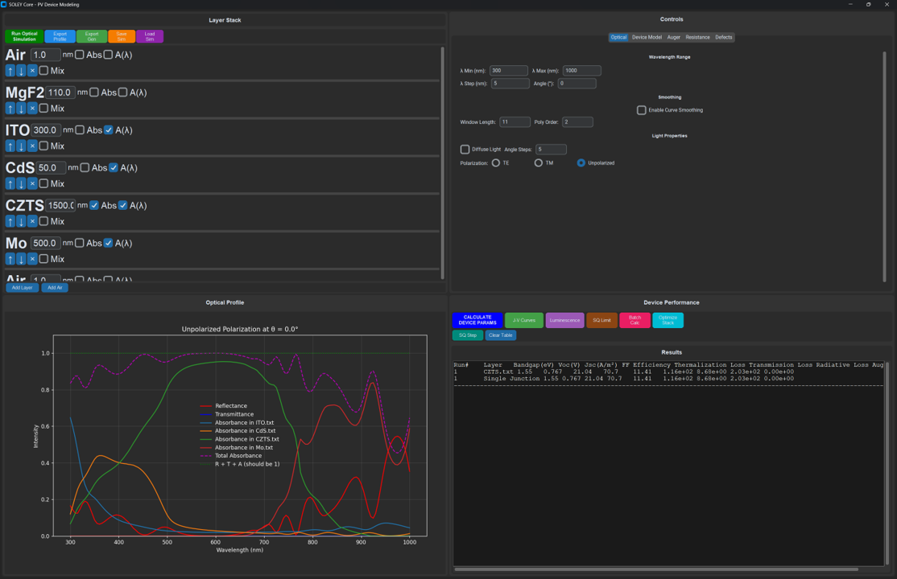
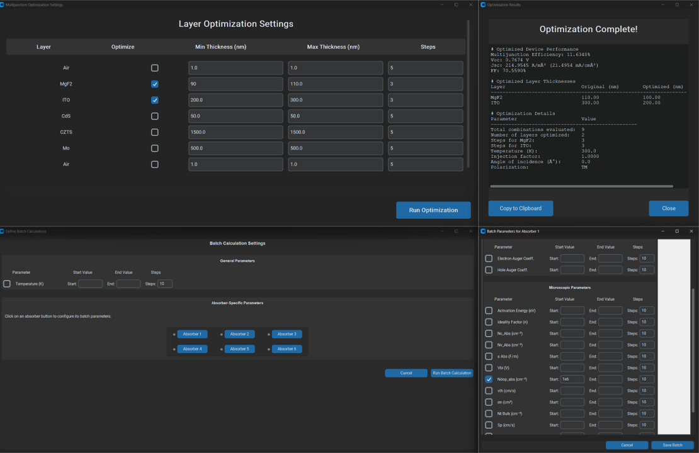
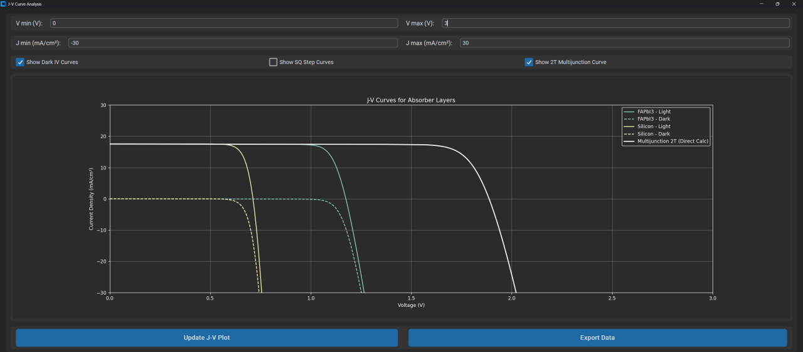
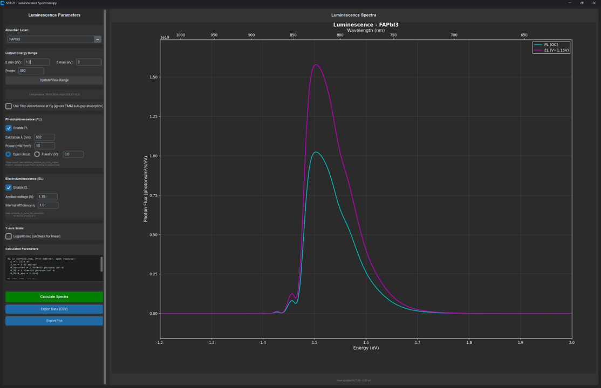
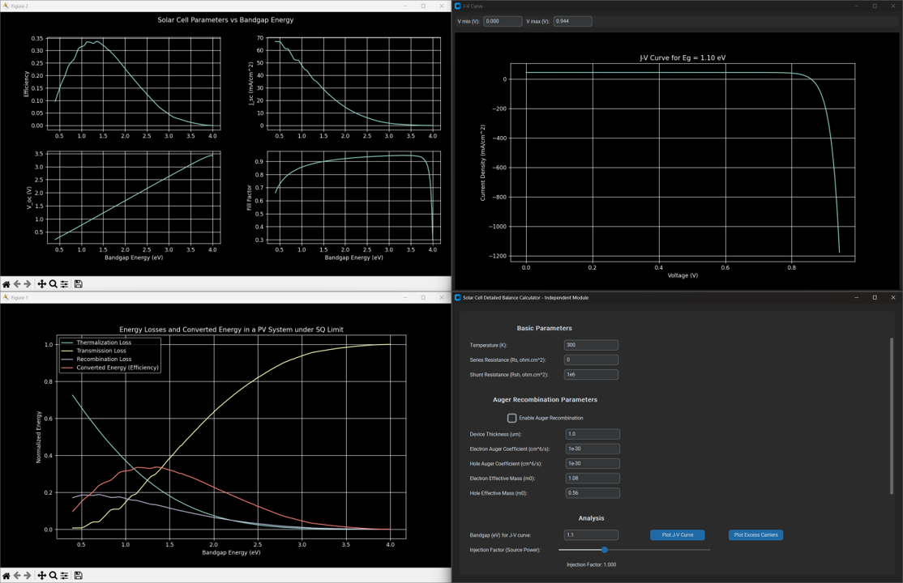
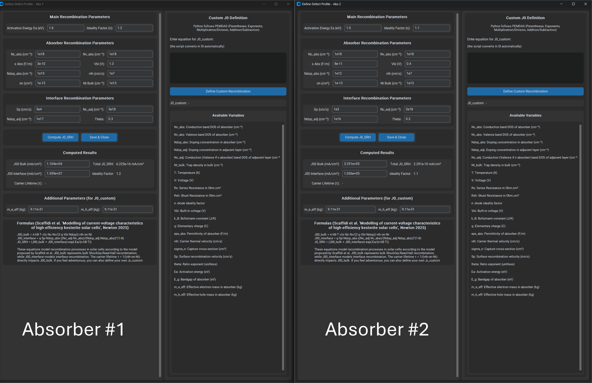

Overview
SOLEY is a simulation platform for researchers and engineers working on photovoltaic device optimisation. Unlike traditional drift-diffusion simulators, SOLEY implements an extended detailed balance framework combined with rigorous Transfer Matrix Method (TMM) optical calculations, offering a complementary approach to existing tools like SCAPS-1D or PC1D.
Why SOLEY?
Thermodynamically Consistent
Built on detailed balance principles ensuring physical accuracy
Multi-Junction Support
Native support for tandem and multi-terminal configurations
Bulk and Interface Defects
Customisable recombination pathways
Fast & Parallel
TMM calculations with generation profile export
Luminescence Spectroscopy
Integrated PL/EL for material characterization
Advanced Diode Analysis
Ideality factor and differential resistance vs voltage
Bifacial Modules
Rear-side absorption with albedo and angular TMM
Photon Recycling
Rau optical reciprocity for effective J0_rad calculation
Light Trapping & Scattering
Advanced optical modeling for enhanced absorption
Design Exploration
Quick parameter screening and optimization
Application Screenshots
See SOLEY in action with these interface examples:

Main SOLEY Interface - Layer stack management and optical profile visualization

Layer stack optimisation panel and Batch calculation panel

J-V curve plotting window with multi-absorber support

Luminescence spectroscopy window showing PL and EL emission spectra

Shockley-Queisser limit calculator with theoretical efficiency analysis

Defect parameter window for bulk and interface recombination modeling
💡 Tip: Start with the example files included in the download to familiarize yourself with the workflow before building your own device structures.
Download SOLEY v1.9.8
Choose your platform below. SOLEY now requires installation. Example files are located in the installation directory (Program Files/SOLEY/ for Windows).
📦 What's included:
- SOLEY installer with full application
- Example device structures (Windows: Program Files/SOLEY/)
- Sample optical constants database
- Configuration files with method details (optics.txt, global_parameters.txt, outputs.txt)
- User manual (PDF) should be downloaded separately on Zenodo
System Requirements
- OS: Windows 10/11, macOS 10.15+, or Ubuntu 20.04+
- RAM: 4 GB minimum (8 GB recommended)
- Disk Space: 500 MB free space
- Display: 1280×720 minimum resolution
Previous Versions
All releases are archived on Zenodo with DOI versioning.
Quick Start Guide
Installation
- Download the appropriate installer for your operating system
- Run the installer and follow the installation wizard
- Launch SOLEY from your applications menu or desktop shortcut
- For Windows: Example files are located in Program Files/SOLEY/
⚠️ macOS Users: You may need to right-click the application and select "Open" the first time due to Gatekeeper security. Go to System Preferences → Security & Privacy if blocked.
First Simulation in 5 Steps
1. Load Example Structure
File → Open → Select "perovskite_silicon_tandem.soley"
2. Run Optical Calculation
Click "Calculate TMM" to compute absorption profiles
3. Set Device Parameters
Navigate to "Device Physics" tab and review recombination settings
4. Generate J-V Curve
Tools → J-V Characteristics → Select illumination conditions
5. Export Results
File → Export → Choose CSV or PNG format
Essential Workflow
1. Define layer stack (materials + thicknesses)
2. Assign optical constants (n, k data)
3. Run TMM calculation
4. Set absorber parameters (Eg, defects, etc.)
5. Choose illumination (spectrum, angle, intensity)
6. Run electrical model (J-V, Generation, PL, etc.)
7. Analyze and export results
Example Files Included
single_junction_silicon.soley - Basic c-Si deviceperovskite_silicon_tandem.soley - 2T tandem cellCZTS.soley - Sulphur KesteriteCZTSe.soley - Selenium Kesterite
Getting Help
Consult the full User Manual (PDF) for detailed tutorials and parameter explanations.
Technical Approach
Optical Model: Transfer Matrix Method
SOLEY implements the Fresnel-based TMM for stratified media:
- Exact solution of Maxwell's equations in planar geometry
- Coherent interference effects in thin films
- Partial coherence modeling (convolution & sampling methods)
- Direct and diffuse illumination with angular integration
- Three light scattering models: Debye-Waller, geometric trapping, and hybrid treatment
Reference: Jimenez et al., Sol. Mat. 251, 112109 (2023), DOI: 10.1016/j.solmat.2022.112109
Electrical Model: Extended Detailed Balance
The device physics engine solves:
J(V) = Jph - J0_rad·[exp(qV/kT) - 1]
- J0_SRH·[exp(qV/nkT) - 1]
- JAuger(V)
- V/Rsh
- J·Rs
Key advantages:
- No need to solve Poisson-drift-diffusion system
- Faster iteration for design screening
- Thermodynamic consistency checks
- Direct link between optical and electrical models
Reference: Jehl Li-Kao, Solar RRL (2025), DOI: 10.1002/solr.202500345
Defect Modelling: Bulk and Interface Recombination
SOLEY translates microscopic trap parameters into macroscopic J₀ using the formulation from Scaffidi et al.:
Bulk recombination:
J₀₀_bulk = π·kB·T·√(ε·Nc·Nv/(2·q·Vbi·Ndop))·vth·σn·Nt
Interface recombination:
J₀₀_interface = q·Sp·Ndop·[(Nc_adj·Nv)/(Ndop_adj·Ndop)]^(1-θ)
Final J₀_SRH:
J₀_SRH = (J₀₀_bulk + J₀₀_interface)·exp(-Ea/(n·kB·T))
Reference: Scaffidi, R. et al. Newton 1(8), 100198 (2025). DOI: 10.1016/j.newton.2025.100198
Patch Notes
Version history and changelog for SOLEY releases.
Version 1.9.8 (Current)
Release Date: May 2026
Physics, multijunction, and packaging:
- Linux build now bundles Qt-WebEngine: the Linux executable no longer fails to open on distributions missing the system Qt-WebEngine packages. Self-contained at the cost of a larger download (~250 MB instead of ~100 MB).
- 2T multijunction solver: replaced the legacy interpolation-based combiner with the direct diode-equation solver across every code path (Device tab, J-V tab, headless calculation). Single source of truth for 2T physics.
- MPP refinement: 3-point parabolic refinement around argmax(P) so reported V_mpp, J_mpp, P_max are no longer pinned to voltage-grid resolution. Same logic in api, jv, and device paths.
- Per-absorber scattering mode: a new layer-level dropdown — Flat / Debye-Waller / Geometric — replaces the implicit global heuristic. The "Geometric" mode is the light-trapping model (textured-surface scattering with multi-bounce cavity factor); honored only on absorbers. Tagged per-layer and cached accordingly; old .soley files migrate automatically.
Version 1.9.7
Release Date: April 2026
Bugfix release: fixes a project file loading issue where custom optical material paths were lost during the second loading pass, causing missing absorber layers.
Version 1.9.6
Release Date: March 2026
Bug Fixes & Accuracy Improvements:
- TM Polarization Fix: Corrected Poynting-vector normalization for TM polarization in the TMM engine. Generation profiles through glass superstrates (e.g. perovskite/silicon tandems) are now accurate for both TE and TM components.
- Numerical Stability: Added overflow guard in the diode equation solver for extreme series resistance values, preventing crashes in edge-case device configurations.
- TMM Cache Fix: Optical cache no longer falsely invalidates when Bruggeman EMA merges mixed-index layers, eliminating unnecessary recalculations.
- Results Export Rewrite: CSV export now correctly handles multijunction devices with per-subcell PV parameters, J-V curves, and diode analysis.
- Project File Portability: .soley files now store canonical material paths instead of temporary paths, making project files portable across machines.
Version 1.9.5
Release Date: February 2026
Major Updates:
- 3-Terminal Common-Z Tandem Mode: Distributed network model with sheet resistance and cell width parameters, replacing the lumped R_B approximation. Robust MPP optimizer across all coupling regimes.
- Photon Recycling: New module computing escape probability and radiative coupling between subcells.
- Mixed Coherent/Incoherent TMM: Stacks with thick layers (glass substrates) no longer crash. Katsidis & Siapkas 2002 method handles thick layers via Beer-Lambert + Redheffer star product, transparent to all callers.
- Multi-Bounce Geometric Light Trapping: Textured surface reflectance now accounts for inter-facet bounces (Campbell & Green 1987), with proper deduplication against the TMM cavity model.
- Major Save/Load Overhaul: Fixed dozens of bugs where device parameters (SRH, defects, bifacial, injection level, wavelength range) were lost or leaked between presets. Three duplicate loading paths unified into one.
- Stability & Build Fixes: Hecht model no longer silently disabled in packaged builds, NumPy 2.0 compatible, legacy tkinter GUI fully removed.
Version 1.9
Release Date: February 2026
Major Updates:
- Photon Recycling: Implementation of photon recycling via Rau's optical reciprocity relation. Calculates effective radiative saturation current J0_rad_eff by accounting for the fraction of radiatively emitted photons that escape the device vs. being reabsorbed. Uses escape probability P_esc(E) from diffuse absorptivity (Kirchhoff reciprocity). Also includes photon coupling currents between subcells in multijunction devices.
- Critical Bug Fix: Fixed a severe bug where moving or removing a layer would corrupt the layer labeling and cause incorrect optical and device modeling results. Layer indices are now properly maintained throughout all operations.
- Bug fixes and QoL improvements: Various stability improvements and user experience enhancements
Version 1.8.1
Release Date: January 2026
Minor Update:
- macOS .dmg packaging: macOS builds are now distributed as .dmg disk images with drag-to-Applications installation
- IEC 60904-1-2 bifacial characterization: Added standard-compliant bifacial device characterization with configurable rear irradiance, bifaciality coefficients, and bifacial gain metrics
Version 1.8
Release Date: January 2026
Major Updates:
- Bifacial Simulation: Full dual-sided PV module support with angular-resolved rear-side TMM. Three illumination modes (Auto, Full Environment, Custom), wavelength-dependent albedo models (presets for grass/sand/concrete/snow/water, flat value, Gaussian profile), and per-layer bifacial gain output
- HTML GUI: New cross-platform front end via pywebview (run_soley.py). Calls the same physics as the CustomTkinter interface through a modular Python API backend
Version 1.7
Release Date: December 10th, 2025
Major Updates:
- Light Scattering/Trapping Logic: Three comprehensive models - Debye-Waller factors for smooth interfaces, geometric light trapping for textured surfaces with infinite bounce path enhancement, and hybrid absorber/non-absorber interface treatment
- Voltage Dependent Collection: Integrated Hecht equation for modeling collection efficiency as a function of applied voltage based on mobility-lifetime product (μτ) and drift length
- Advanced Diode Analysis: Added local ideality factor n_id(V) and differential resistance R_diff(V) diagnostic tools to separate shunt, recombination, and series resistance regimes
- Integrated Theoretical Hints: GUI now includes contextual scientific explanations for each functionality, helping users understand the physics behind SOLEY's features
- Installation Changes: SOLEY now uses an installer instead of portable executables
- Example Files: Example files now included in installation directory (Program Files/SOLEY/ for Windows)
Version 1.5
Release Date: October 30th, 2025
Key Features:
- Luminescence Logic: Implemented photoluminescence (PL) and electroluminescence (EL) spectroscopy capabilities
- Bug Fixes: Corrected bug in Auger recombination calculations
Version 1.3
Release Date: September 15th, 2025
Key Features:
- Modern GUI: Interface redesign with improved user experience
- Batch Logic Fixes: Resolved bugs affecting batch calculation workflows
📋 Version Archive: All previous versions are archived on
Zenodo with permanent DOI versioning for reproducibility.
Citation
If you use SOLEY in your research, please cite:
Jehl Li-Kao, Z. "SOLEY: a package for optical and extended detailed balance model for photovoltaic device simulation." Solar RRL (2025). DOI: 10.1002/solr.202500345
BibTeX
@article{jehl2025soley,
author = {Zacharie Jehl Li-Kao},
title = {SOLEY: a package for optical and extended
detailed balance model for photovoltaic
device simulation},
journal = {Solar RRL},
year = {2025},
doi = {10.1002/solr.202500345}
}
License
SOLEY is distributed for academic use only. Commercial use requires explicit written permission from the author.
By downloading and using SOLEY, you agree to:
- Use the software strictly for non-commercial research and educational purposes
- Cite the software in any publications or presentations
- Not redistribute modified versions without permission